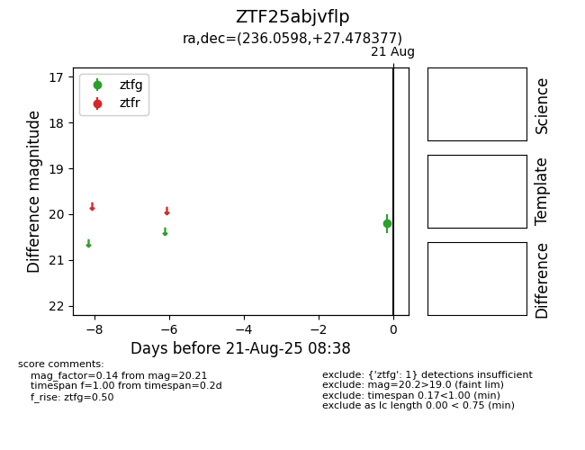

Target ZTF25abjvflp at 2025-08-21 08:38, see:
FINK: fink-portal.org/ZTF25abjvflp
Lasair: lasair-ztf.lsst.ac.uk/objects/ZTF25abjvflp
ALeRCE: alerce.online/object/ZTF25abjvflp
alt names
ZTF25abjvflp (ztf,alerce)
coordinates:
equatorial (ra, dec) = (236.0598,+27.47838)
galactic (l, b) = (43.7231,+51.81103)
photometry
last ztfg=20.21
1 ztfg detections
